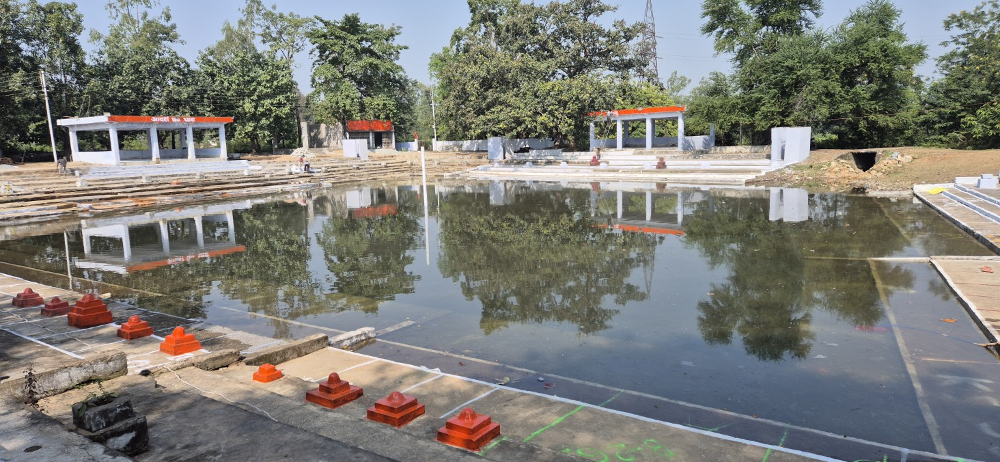
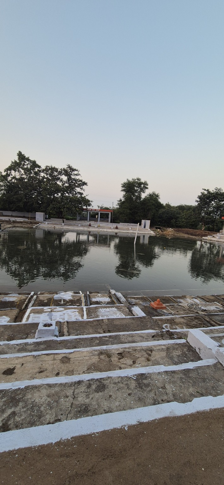
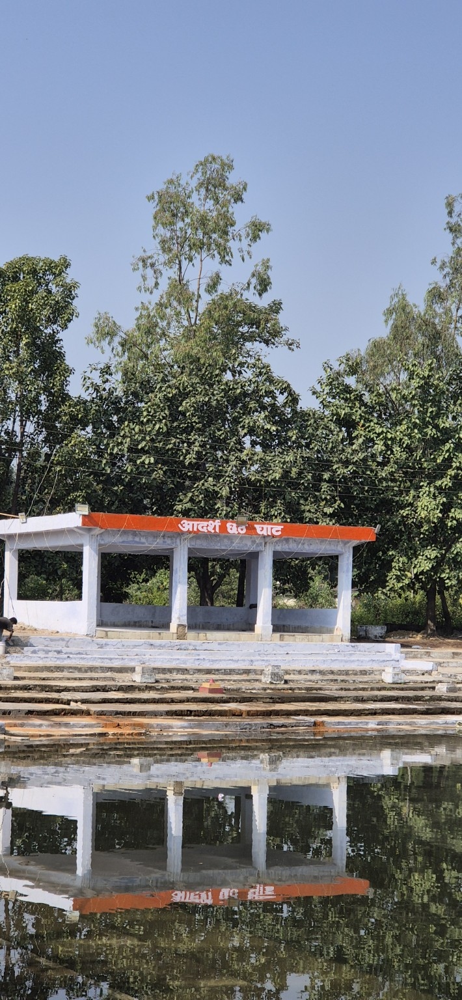
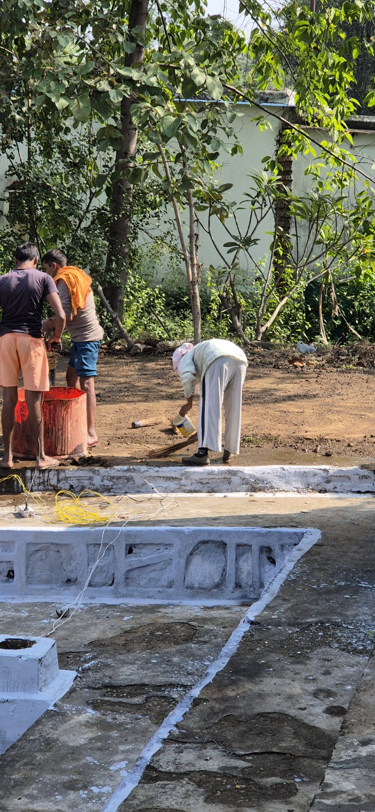
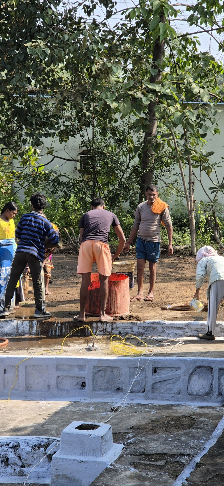
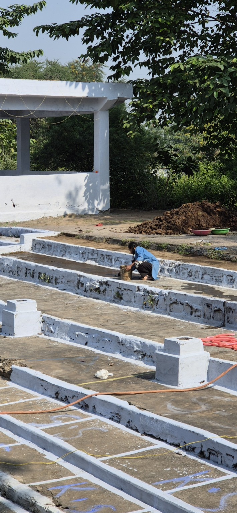

कुसमुंडा में छठ महापर्व की भव्य तैयारियाँ: आदर्श छठ घाट की सफाई, रंग-रोगन और आकर्षक रोशनी; 13 से 16 नवंबर तक चार दिवसीय आयोजन
लोक आस्था के महापर्व छठ पूजा को लेकर कुसमुंडा में तैयारियाँ जोरों पर हैं। आदर्श छठ पूजा समिति, कुसमुंडा के सदस्य घाट को स्वच्छ, सुव्यवस्थित और आकर्षक बनाने में जुटे हैं।
कुसमुंडा (कोरबा)। सूर्योपासना और लोक आस्था के चार दिवसीय छठ महापर्व की शुरुआत शुक्रवार, 13 नवंबर 2026 को नहाय-खाय के साथ हो रही है। पर्व का समापन सोमवार, 16 नवंबर को उदीयमान सूर्य को अर्घ्य देने के साथ होगा। इसी क्रम में आदर्श छठ पूजा समिति, कुसमुंडा की ओर से घाट परिसर में तैयारियाँ की जा रही हैं।
घाट की सफाई और रंग-रोगन पर विशेष ध्यान
आयोजन से पहले घाट की सीढ़ियों और आसपास के हिस्सों की सफाई, सफेदी तथा रंग-रोगन का काम किया गया है। उपलब्ध तस्वीरों में स्थानीय लोग घाट के आसपास काम करते हुए नजर आ रहे हैं। जलाशय के किनारे स्थित सीढ़ियों और पूजा स्थलों को व्यवस्थित करने के प्रयास दिखाई देते हैं।

रोशनी से सजा प्रवेश मार्ग
घाट तक जाने वाले मार्ग पर रंगीन विद्युत सजावट और प्रकाशयुक्त प्रवेश द्वार लगाए गए हैं। रात में जगमगाती सजावट से श्रद्धालुओं के स्वागत के लिए उत्सवी माहौल तैयार हो रहा है। प्रवेश मार्ग पर एक के बाद एक सजावटी द्वार नजर आते हैं।
13 से 16 नवंबर: चार दिनों का कार्यक्रम
13 नवंबर, शुक्रवार — नहाय-खाय: शुद्धता और सात्विक भोजन के साथ पर्व की शुरुआत।
14 नवंबर, शनिवार — खरना: व्रती खरना पूजा कर प्रसाद ग्रहण करते हैं और निर्जला व्रत आरंभ करते हैं।
15 नवंबर, रविवार — संध्या अर्घ्य: अस्ताचलगामी सूर्य को अर्घ्य अर्पित किया जाएगा।
16 नवंबर, सोमवार — उषा अर्घ्य: उगते सूर्य को अर्घ्य देने के साथ महापर्व का समापन होगा।
सामूहिक प्रयास से तैयार हो रहा आदर्श छठ घाट
घाट परिसर में रंगाई-पुताई और साफ-सफाई के कार्यों में कई लोग जुटे दिखाई देते हैं। आदर्श छठ घाट पर बने मंडप, जलाशय और सीढ़ियों के आसपास तैयारियों का काम चल रहा है। इन प्रयासों का उद्देश्य पर्व के दौरान श्रद्धालुओं के लिए साफ-सुथरा और व्यवस्थित वातावरण उपलब्ध कराना है।
छठ पूजा के अवसर पर बड़ी संख्या में व्रती और श्रद्धालु घाटों पर पहुँचते हैं। ऐसे में स्वच्छता, सुरक्षित आवागमन और पूजा के दौरान अनुशासन बनाए रखना महत्वपूर्ण है। श्रद्धालुओं से घाट की स्वच्छता बनाए रखने और स्थानीय व्यवस्था में सहयोग करने की अपील है।
फोटो गैलरी: तस्वीरों में देखें तैयारियाँ




